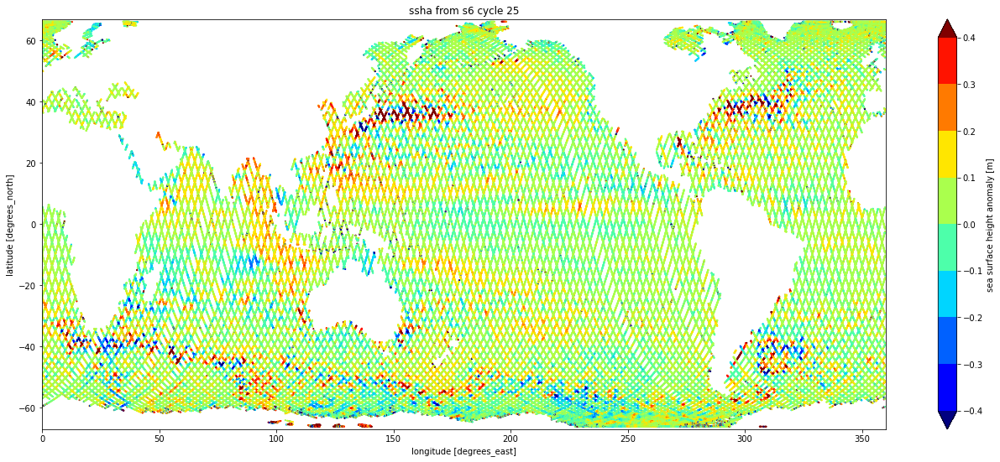
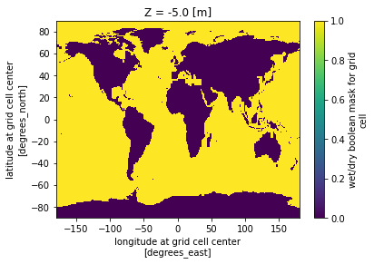
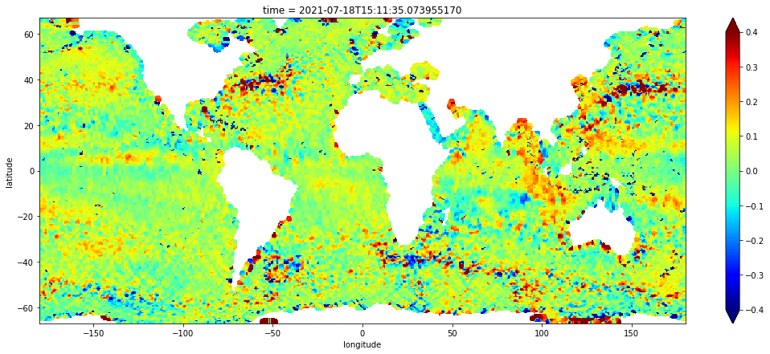
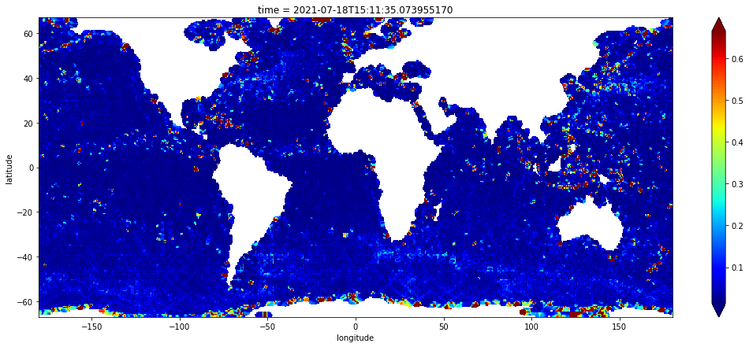
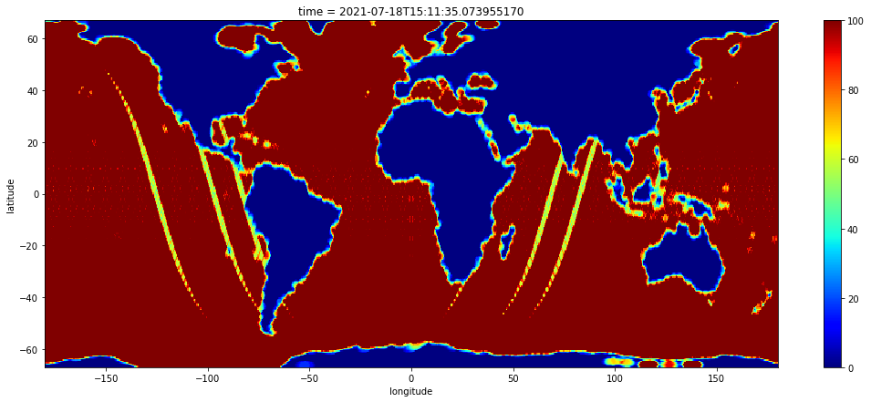

import os
import tqdm
import numpy as np
import xarray as xr
import matplotlib.pyplot as plt
from concurrent.futures import ThreadPoolExecutor
from pyresample.kd_tree import resample_gauss
import pyresample as prSentinel-6 MF L2 Altimetry Data Access (OPeNDAP) & Gridding
imported on: 2023-05-02
This notebook was originally developed for the 2021 Cloud Hackathon, and has been updated with most current approaches.
The original source for this document is https://nasa-openscapes.github.io/2021-Cloud-Hackathon/tutorials/06_S6_OPeNDAP_Access_Gridding.html
06. Sentinel-6 MF L2 Altimetry Data Access (OPeNDAP) & Gridding
In this tutorial you will learn…
- about level 2 radar altimetry data from the Sentinel-6 Michael Freilich mission;
- how to efficiently download variable subsets using OPeNDAP;
- how to grid the along-track altimetry observations produced by S6 at level 2.;
About Ocean Surface Topography (OST)

The primary contribution of satellite altimetry to satellite oceanography has been to:
- Improve the knowledge of ocean tides and develop global tide models.
- Monitor the variation of global mean sea level and its relationship to changes in ocean mass and heat content.
- Map the general circulation variability of the ocean, including the ocean mesoscale, over decades and in near real-time using multi-satellite altimetric sampling.
About Sentinel-6 MF
https://search.earthdata.nasa.gov/search?fpj=Sentinel-6

https://podaac.jpl.nasa.gov/Sentinel-6
Mission Characteristics
Semi-major axis: 7,714.43 km
Eccentricity: 0.000095
Inclination: 66.04°
Argument of periapsis: 90.0°
Mean anomaly: 253.13°
Reference altitude: 1,336 km
Nodal period: 6,745.72 sec
Repeat period: 9.9156 days
Number of revolutions within a cycle: 127
Number of passes within a cycle: 254
Equatorial cross track separation: 315 km
Ground track control band: +1 km
Acute angle at Equator crossings: 39.5°
Ground track speed: 5.8 km/sRequirements
This workflow was developed using Python 3.9 (and tested against versions 3.7, 3.8).
Dataset
https://podaac.jpl.nasa.gov/dataset/JASON_CS_S6A_L2_ALT_LR_RED_OST_NRT_F
This example operates on Level 2 Low Resolution Altimetry from Sentinel-6 Michael Freilich (the Near Real Time Reduced distribution). It is most easily identified by its collection ShortName, given below with the more cryptic concept-id, it’s unique identifier in the CMR.
ShortName = 'JASON_CS_S6A_L2_ALT_LR_RED_OST_NRT_F'
concept_id = 'C1968980576-POCLOUD'
cycle = 25
url = f"https://cmr.earthdata.nasa.gov/search/granules.csv?ShortName={ShortName}&cycle={cycle}&page_size=200"
print(url)https://cmr.earthdata.nasa.gov/search/granules.csv?ShortName=JASON_CS_S6A_L2_ALT_LR_RED_OST_NRT_F&cycle=25&page_size=200curl --silent --output
cat
tail --lines
cut --delimiter --fields!curl --silent --output "results.csv" "$url"
files = !cat results.csv | tail --lines=+2 | cut --delimiter=',' --fields=5 | cut --delimiter='/' --fields=6
print(files.s.replace(" ", "\n"))S6A_P4_2__LR_RED__NR_025_001_20210713T162644_20210713T182234_F02.nc
S6A_P4_2__LR_RED__NR_025_003_20210713T182234_20210713T201839_F02.nc
S6A_P4_2__LR_RED__NR_025_006_20210713T201839_20210713T215450_F02.nc
S6A_P4_2__LR_RED__NR_025_007_20210713T215450_20210713T234732_F02.nc
S6A_P4_2__LR_RED__NR_025_009_20210713T234732_20210714T014224_F02.nc
S6A_P4_2__LR_RED__NR_025_011_20210714T014224_20210714T033812_F02.nc
S6A_P4_2__LR_RED__NR_025_013_20210714T033812_20210714T053356_F02.nc
S6A_P4_2__LR_RED__NR_025_015_20210714T053357_20210714T072934_F02.nc
S6A_P4_2__LR_RED__NR_025_017_20210714T072934_20210714T090919_F02.nc
S6A_P4_2__LR_RED__NR_025_019_20210714T090919_20210714T110146_F02.nc
S6A_P4_2__LR_RED__NR_025_021_20210714T110146_20210714T125702_F02.nc
S6A_P4_2__LR_RED__NR_025_023_20210714T125702_20210714T145316_F02.nc
S6A_P4_2__LR_RED__NR_025_025_20210714T145317_20210714T164922_F02.nc
S6A_P4_2__LR_RED__NR_025_027_20210714T164922_20210714T184510_F02.nc
S6A_P4_2__LR_RED__NR_025_029_20210714T184510_20210714T204143_F02.nc
S6A_P4_2__LR_RED__NR_025_032_20210714T204143_20210714T221611_F02.nc
S6A_P4_2__LR_RED__NR_025_033_20210714T221611_20210715T000941_F02.nc
S6A_P4_2__LR_RED__NR_025_035_20210715T000941_20210715T020456_F02.nc
S6A_P4_2__LR_RED__NR_025_037_20210715T020456_20210715T040047_F02.nc
S6A_P4_2__LR_RED__NR_025_039_20210715T040047_20210715T055630_F02.nc
S6A_P4_2__LR_RED__NR_025_041_20210715T055630_20210715T075208_F02.nc
S6A_P4_2__LR_RED__NR_025_043_20210715T075208_20210715T093037_F02.nc
S6A_P4_2__LR_RED__NR_025_045_20210715T093037_20210715T112356_F02.nc
S6A_P4_2__LR_RED__NR_025_047_20210715T112356_20210715T131944_F02.nc
S6A_P4_2__LR_RED__NR_025_049_20210715T131944_20210715T151600_F02.nc
S6A_P4_2__LR_RED__NR_025_051_20210715T151602_20210715T165851_F02.nc
S6A_P4_2__LR_RED__NR_025_053_20210715T171228_20210715T190748_F02.nc
S6A_P4_2__LR_RED__NR_025_056_20210715T190748_20210715T204627_F02.nc
S6A_P4_2__LR_RED__NR_025_057_20210715T204627_20210715T223758_F02.nc
S6A_P4_2__LR_RED__NR_025_059_20210715T223758_20210716T003159_F02.nc
S6A_P4_2__LR_RED__NR_025_061_20210716T003159_20210716T022732_F02.nc
S6A_P4_2__LR_RED__NR_025_063_20210716T022732_20210716T042333_F02.nc
S6A_P4_2__LR_RED__NR_025_065_20210716T042333_20210716T061901_F02.nc
S6A_P4_2__LR_RED__NR_025_067_20210716T061901_20210716T081446_F02.nc
S6A_P4_2__LR_RED__NR_025_070_20210716T081446_20210716T095203_F02.nc
S6A_P4_2__LR_RED__NR_025_071_20210716T095203_20210716T114624_F02.nc
S6A_P4_2__LR_RED__NR_025_073_20210716T114624_20210716T134228_F02.nc
S6A_P4_2__LR_RED__NR_025_075_20210716T134228_20210716T153841_F02.nc
S6A_P4_2__LR_RED__NR_025_077_20210716T153841_20210716T173433_F02.nc
S6A_P4_2__LR_RED__NR_025_079_20210716T173433_20210716T193033_F02.nc
S6A_P4_2__LR_RED__NR_025_082_20210716T193033_20210716T210718_F02.nc
S6A_P4_2__LR_RED__NR_025_083_20210716T210718_20210716T225942_F02.nc
S6A_P4_2__LR_RED__NR_025_085_20210716T225942_20210717T005425_F02.nc
S6A_P4_2__LR_RED__NR_025_087_20210717T005425_20210717T025012_F02.nc
S6A_P4_2__LR_RED__NR_025_089_20210717T025012_20210717T044557_F02.nc
S6A_P4_2__LR_RED__NR_025_091_20210717T044557_20210717T064133_F02.nc
S6A_P4_2__LR_RED__NR_025_093_20210717T064133_20210717T082134_F02.nc
S6A_P4_2__LR_RED__NR_025_095_20210717T082134_20210717T101352_F02.nc
S6A_P4_2__LR_RED__NR_025_097_20210717T101352_20210717T120859_F02.nc
S6A_P4_2__LR_RED__NR_025_099_20210717T120859_20210717T140513_F02.nc
S6A_P4_2__LR_RED__NR_025_101_20210717T140513_20210717T160120_F02.nc
S6A_P4_2__LR_RED__NR_025_103_20210717T160120_20210717T175708_F02.nc
S6A_P4_2__LR_RED__NR_025_105_20210717T175708_20210717T195329_F02.nc
S6A_P4_2__LR_RED__NR_025_108_20210717T195329_20210717T212832_F02.nc
S6A_P4_2__LR_RED__NR_025_109_20210717T212832_20210717T232147_F02.nc
S6A_P4_2__LR_RED__NR_025_111_20210717T232147_20210718T011655_F02.nc
S6A_P4_2__LR_RED__NR_025_113_20210718T011655_20210718T031245_F02.nc
S6A_P4_2__LR_RED__NR_025_115_20210718T031245_20210718T050829_F02.nc
S6A_P4_2__LR_RED__NR_025_117_20210718T050829_20210718T070406_F02.nc
S6A_P4_2__LR_RED__NR_025_119_20210718T070406_20210718T084306_F02.nc
S6A_P4_2__LR_RED__NR_025_121_20210718T084306_20210718T103559_F02.nc
S6A_P4_2__LR_RED__NR_025_123_20210718T103559_20210718T123140_F02.nc
S6A_P4_2__LR_RED__NR_025_125_20210718T123140_20210718T142756_F02.nc
S6A_P4_2__LR_RED__NR_025_127_20210718T142756_20210718T162356_F02.nc
S6A_P4_2__LR_RED__NR_025_129_20210718T162356_20210718T181945_F02.nc
S6A_P4_2__LR_RED__NR_025_132_20210718T181945_20210718T195907_F02.nc
S6A_P4_2__LR_RED__NR_025_133_20210718T195907_20210718T215014_F02.nc
S6A_P4_2__LR_RED__NR_025_135_20210718T215014_20210718T234402_F02.nc
S6A_P4_2__LR_RED__NR_025_137_20210718T234402_20210719T013937_F02.nc
S6A_P4_2__LR_RED__NR_025_139_20210719T013937_20210719T033531_F02.nc
S6A_P4_2__LR_RED__NR_025_141_20210719T033531_20210719T053101_F02.nc
S6A_P4_2__LR_RED__NR_025_143_20210719T053101_20210719T072643_F02.nc
S6A_P4_2__LR_RED__NR_025_146_20210719T072643_20210719T090425_F02.nc
S6A_P4_2__LR_RED__NR_025_147_20210719T090425_20210719T105824_F02.nc
S6A_P4_2__LR_RED__NR_025_149_20210719T105824_20210719T125424_F02.nc
S6A_P4_2__LR_RED__NR_025_151_20210719T125424_20210719T145038_F02.nc
S6A_P4_2__LR_RED__NR_025_153_20210719T145541_20210719T164632_F02.nc
S6A_P4_2__LR_RED__NR_025_155_20210719T164632_20210719T184227_F02.nc
S6A_P4_2__LR_RED__NR_025_158_20210719T184227_20210719T201949_F02.nc
S6A_P4_2__LR_RED__NR_025_159_20210719T201949_20210719T221154_F02.nc
S6A_P4_2__LR_RED__NR_025_161_20210719T221154_20210720T000626_F02.nc
S6A_P4_2__LR_RED__NR_025_163_20210720T000626_20210720T020212_F02.nc
S6A_P4_2__LR_RED__NR_025_165_20210720T020212_20210720T035756_F02.nc
S6A_P4_2__LR_RED__NR_025_167_20210720T035756_20210720T055333_F02.nc
S6A_P4_2__LR_RED__NR_025_169_20210720T055333_20210720T073350_F02.nc
S6A_P4_2__LR_RED__NR_025_171_20210720T073350_20210720T092602_F02.nc
S6A_P4_2__LR_RED__NR_025_173_20210720T092602_20210720T112057_F02.nc
S6A_P4_2__LR_RED__NR_025_175_20210720T112057_20210720T131708_F02.nc
S6A_P4_2__LR_RED__NR_025_177_20210720T131708_20210720T151317_F02.nc
S6A_P4_2__LR_RED__NR_025_184_20210720T190549_20210720T204056_F02.nc
S6A_P4_2__LR_RED__NR_025_185_20210720T204056_20210720T223355_F02.nc
S6A_P4_2__LR_RED__NR_025_187_20210720T223355_20210721T002855_F02.nc
S6A_P4_2__LR_RED__NR_025_189_20210721T002855_20210721T022443_F02.nc
S6A_P4_2__LR_RED__NR_025_191_20210721T022443_20210721T042029_F02.nc
S6A_P4_2__LR_RED__NR_025_193_20210721T042029_20210721T061605_F02.nc
S6A_P4_2__LR_RED__NR_025_195_20210721T061605_20210721T075531_F02.nc
S6A_P4_2__LR_RED__NR_025_197_20210721T075531_20210721T094805_F02.nc
S6A_P4_2__LR_RED__NR_025_199_20210721T094805_20210721T114336_F02.nc
S6A_P4_2__LR_RED__NR_025_201_20210721T114336_20210721T133952_F02.nc
S6A_P4_2__LR_RED__NR_025_203_20210721T133952_20210721T153555_F02.nc
S6A_P4_2__LR_RED__NR_025_205_20210721T153555_20210721T173143_F02.nc
S6A_P4_2__LR_RED__NR_025_207_20210721T173143_20210721T191151_F02.nc
S6A_P4_2__LR_RED__NR_025_209_20210721T191151_20210721T210223_F02.nc
S6A_P4_2__LR_RED__NR_025_211_20210721T210223_20210721T225607_F02.nc
S6A_P4_2__LR_RED__NR_025_213_20210721T225607_20210722T005131_F02.nc
S6A_P4_2__LR_RED__NR_025_215_20210722T005131_20210722T024724_F02.nc
S6A_P4_2__LR_RED__NR_025_217_20210722T024724_20210722T044301_F02.nc
S6A_P4_2__LR_RED__NR_025_219_20210722T044301_20210722T063841_F02.nc
S6A_P4_2__LR_RED__NR_025_221_20210722T063841_20210722T081646_F02.nc
S6A_P4_2__LR_RED__NR_025_223_20210722T081646_20210722T101025_F02.nc
S6A_P4_2__LR_RED__NR_025_225_20210722T101025_20210722T120619_F02.nc
S6A_P4_2__LR_RED__NR_025_227_20210722T120619_20210722T140235_F02.nc
S6A_P4_2__LR_RED__NR_025_229_20210722T140235_20210722T155831_F02.nc
S6A_P4_2__LR_RED__NR_025_231_20210722T155831_20210722T175423_F02.nc
S6A_P4_2__LR_RED__NR_025_234_20210722T175423_20210722T193222_F02.nc
S6A_P4_2__LR_RED__NR_025_235_20210722T193222_20210722T212406_F02.nc
S6A_P4_2__LR_RED__NR_025_237_20210722T212406_20210722T231828_F02.nc
S6A_P4_2__LR_RED__NR_025_239_20210722T231828_20210723T011405_F02.nc
S6A_P4_2__LR_RED__NR_025_241_20210723T011405_20210723T030955_F02.nc
S6A_P4_2__LR_RED__NR_025_243_20210723T030955_20210723T050533_F02.nc
S6A_P4_2__LR_RED__NR_025_245_20210723T050533_20210723T064603_F02.nc
S6A_P4_2__LR_RED__NR_025_247_20210723T064603_20210723T083817_F02.nc
S6A_P4_2__LR_RED__NR_025_249_20210723T083817_20210723T103256_F02.nc
S6A_P4_2__LR_RED__NR_025_251_20210723T103256_20210723T122904_F02.nc
S6A_P4_2__LR_RED__NR_025_253_20210723T122904_20210723T142514_F02.ncOPeNDAP
https://opendap.github.io/documentation/UserGuideComprehensive.html#Constraint_Expressions (Hyrax/OPeNDAP docs)
tmp = files.l[0].split('.')[0]
print(f"https://opendap.earthdata.nasa.gov/collections/{concept_id}/granules/{tmp}.html")https://opendap.earthdata.nasa.gov/collections/C1968980576-POCLOUD/granules/S6A_P4_2__LR_RED__NR_025_001_20210713T162644_20210713T182234_F02.htmlvariables = ['data_01_time',
'data_01_longitude',
'data_01_latitude',
'data_01_ku_ssha']v = ",".join(variables)
urls = []
for f in files:
urls.append(f"https://opendap.earthdata.nasa.gov/collections/{concept_id}/granules/{f}4?{v}")
print(urls[0])https://opendap.earthdata.nasa.gov/collections/C1968980576-POCLOUD/granules/S6A_P4_2__LR_RED__NR_025_001_20210713T162644_20210713T182234_F02.nc4?data_01_time,data_01_longitude,data_01_latitude,data_01_ku_sshaDownload Subsets
These functions download one granule from the remote source to a local target, and will reliably manage simultaneous streaming downloads divided between multiple threads.
with python3:
import requests
def download(source: str, target: str):
with requests.get(source, stream=True) as remote, open(target, 'wb') as local:
if remote.status_code // 100 == 2:
for chunk in remote.iter_content(chunk_size=1024):
if chunk:
local.write(chunk)with wget:
def download(source: str):
target = os.path.basename(source.split("?")[0])
if not os.path.isfile(target):
!wget --quiet --continue --output-document $target $source
return targetn_workers = 12
with ThreadPoolExecutor(max_workers=n_workers) as pool:
workers = pool.map(download, urls)
files = list(tqdm.tqdm(workers, total=len(urls)))100%|██████████| 125/125 [01:01<00:00, 2.05it/s]https://docs.python.org/3/library/concurrent.futures.html#threadpoolexecutor
The source files range from 2.5MB to 3.0MB. These OPeNDAP subsets are ~100KB apiece. (anecdote: it took less than 10 minutes to download subsets for >1700 granules/files when I ran this routine for all cycles going back to 2021-06-22.)
!du -sh .17M .https://www.gnu.org/software/coreutils/manual/html_node/du-invocation.html
Aggregate cycle
Sort the list of local subsets to ensure they concatenate in proper order. Call open_mfdataset on the list to open all the subsets in memory as one dataset in xarray.
ds = xr.open_mfdataset(sorted(files))
print(ds)<xarray.Dataset>
Dimensions: (data_01_time: 827001)
Coordinates:
* data_01_time (data_01_time) datetime64[ns] 2021-07-13T16:26:45 ... ...
Data variables:
data_01_longitude (data_01_time) float64 dask.array<chunksize=(6950,), meta=np.ndarray>
data_01_latitude (data_01_time) float64 dask.array<chunksize=(6950,), meta=np.ndarray>
data_01_ku_ssha (data_01_time) float64 dask.array<chunksize=(6950,), meta=np.ndarray>
Attributes: (12/63)
Convention: CF-1.7
institution: EUMETSAT
references: Sentinel-6_Jason-CS ALT Generic P...
contact: ops@eumetsat.int
radiometer_sensor_name: AMR-C
doris_sensor_name: DORIS
... ...
xref_solid_earth_tide: S6__P4_2__SETD_AX_20151008T000000...
xref_surface_classification: S6__P4____SURF_AX_20151008T000000...
xref_wind_speed_alt: S6A_P4_2__WNDL_AX_20151008T000000...
product_name: S6A_P4_2__LR______20210713T162644...
history: 2021-07-13 18:38:07 : Creation\n2...
history_json: [{"$schema":"https:\/\/harmony.ea...https://xarray.pydata.org/en/stable/generated/xarray.open_mfdataset.html
Make a dictionary to rename variables so that the data_01_ prefix is removed from each one.
new_variable_names = list(map(lambda x: x.split("_")[-1], variables))
map_variable_names = dict(zip(variables, new_variable_names))
map_variable_names{'data_01_time': 'time',
'data_01_longitude': 'longitude',
'data_01_latitude': 'latitude',
'data_01_ku_ssha': 'ssha'}https://docs.python.org/3/library/functions.html#map
https://docs.python.org/3/library/functions.html#zip
ds = ds.rename(map_variable_names)
print(list(ds.variables))['longitude', 'latitude', 'ssha', 'time']Plot ssha variable
https://xarray.pydata.org/en/stable/generated/xarray.Dataset.rename.html
ds.plot.scatter( y="latitude",
x="longitude",
hue="ssha",
s=1,
vmin=-0.4,
vmax=0.4,
levels=9,
cmap="jet",
aspect=2.5,
size=9, )
plt.title(f"ssha from s6 cycle {cycle}")
plt.xlim( 0., 360.)
plt.ylim(-67., 67.)
plt.show()
Borrow 0.5-Degree Grid and Mask from ECCO V4r4
Acknowledgement: This approach using pyresample was shared to me by Ian Fenty, ECCO Lead.
https://search.earthdata.nasa.gov/search/granules?p=C2013583732-POCLOUD
ECCO V4r4 products are distributed in two spatial formats. One set of collections provides the ocean state estimates on the native model grid (LLC0090) and the other provides them after interpolating to a regular grid defined in geographic coordinates with horizontal cell size of 0.5-degrees.
It’s distributed as its own dataset/collection containing just one file. We can simply download it from the HTTPS download endpoint – the file size is inconsequential. The next cell downloads the file into the data folder from the granule’s https endpoint.
ecco_url = "https://archive.podaac.earthdata.nasa.gov/podaac-ops-cumulus-protected/ECCO_L4_GEOMETRY_05DEG_V4R4/GRID_GEOMETRY_ECCO_V4r4_latlon_0p50deg.nc"
ecco_file = download(ecco_url)
ecco_grid = xr.open_dataset(ecco_file)
print(ecco_grid)<xarray.Dataset>
Dimensions: (Z: 50, latitude: 360, longitude: 720, nv: 2)
Coordinates:
* Z (Z) float32 -5.0 -15.0 -25.0 ... -5.461e+03 -5.906e+03
* latitude (latitude) float32 -89.75 -89.25 -88.75 ... 89.25 89.75
* longitude (longitude) float32 -179.8 -179.2 -178.8 ... 179.2 179.8
latitude_bnds (latitude, nv) float32 ...
longitude_bnds (longitude, nv) float32 ...
Z_bnds (Z, nv) float32 ...
Dimensions without coordinates: nv
Data variables:
hFacC (Z, latitude, longitude) float64 ...
Depth (latitude, longitude) float64 ...
area (latitude, longitude) float64 ...
drF (Z) float32 ...
maskC (Z, latitude, longitude) bool ...
Attributes: (12/57)
acknowledgement: This research was carried out by the Jet...
author: Ian Fenty and Ou Wang
cdm_data_type: Grid
comment: Fields provided on a regular lat-lon gri...
Conventions: CF-1.8, ACDD-1.3
coordinates_comment: Note: the global 'coordinates' attribute...
... ...
references: ECCO Consortium, Fukumori, I., Wang, O.,...
source: The ECCO V4r4 state estimate was produce...
standard_name_vocabulary: NetCDF Climate and Forecast (CF) Metadat...
summary: This dataset provides geometric paramete...
title: ECCO Geometry Parameters for the 0.5 deg...
uuid: b4795c62-86e5-11eb-9c5f-f8f21e2ee3e0https://xarray.pydata.org/en/stable/generated/xarray.open_dataset.html
Select index 0 on the Z axis/dimension to get the depth layer at ocean surface.
ecco_grid = ecco_grid.isel(Z=0).copy()https://xarray.pydata.org/en/stable/generated/xarray.DataArray.isel.html
The maskC variable contains a boolean mask representing the wet/dry state of the area contained in each cell of the 3d grid defined by Z and latitude and longitude. Here are the variable’s attributes:
print(ecco_grid.maskC)<xarray.DataArray 'maskC' (latitude: 360, longitude: 720)>
[259200 values with dtype=bool]
Coordinates:
Z float32 -5.0
* latitude (latitude) float32 -89.75 -89.25 -88.75 ... 88.75 89.25 89.75
* longitude (longitude) float32 -179.8 -179.2 -178.8 ... 178.8 179.2 179.8
Attributes:
coverage_content_type: modelResult
long_name: wet/dry boolean mask for grid cell
comment: True for grid cells with nonzero open vertical fr...Plot the land/water mask maskC:
ecco_grid.maskC.plot()<matplotlib.collections.QuadMesh at 0x7fed730b00a0>
https://xarray.pydata.org/en/stable/generated/xarray.DataArray.plot.html
Define target grid based on the longitudes and latitudes from the ECCO grid geometry dataset. This time define the grid using two 2-dimensional arrays that give positions of all SSHA values in geographic/longitude-latitude coordinates.
ecco_lons = ecco_grid.maskC.longitude.values
ecco_lats = ecco_grid.maskC.latitude.values
ecco_lons_2d, ecco_lats_2d = np.meshgrid(ecco_lons, ecco_lats)
print(ecco_lons_2d.shape, ecco_lats_2d.shape)(360, 720) (360, 720)Create the target swath definition from the 2d arrays of lons and lats from ECCO V4r4 0.5-degree grid.
tgt = pr.SwathDefinition(ecco_lons_2d, ecco_lats_2d)Grid ssha or other variable
Get one timestamp to represent the midpoint of the 10-day cycle.
time = np.datetime64(ds['time'].mean().data)
print(time)2021-07-18T15:11:35.073955170Access the target variable, ssha in this case. Make a nan mask from the ssha variable.
nans = ~np.isnan(ds.ssha.values)
ssha = ds.ssha.values[nans]
ssha.shape(518164,)Create the source swath definition from the 1d arrays of lons and lats from the S6 level-2 along-track altimetry time series.
lons = ds.longitude.values[nans]
lats = ds.latitude.values[nans]
print(lons.shape, lats.shape)(518164,) (518164,)lons = (lons + 180) % 360 - 180
src = pr.SwathDefinition(lons, lats)pyresample.geometry.SwathDefinition
Resample ssha data using kd-tree gaussian weighting neighbour approach.
result, stddev, counts = resample_gauss(
src,
ssha,
tgt,
radius_of_influence=175000,
sigmas=25000,
neighbours=100,
fill_value=np.nan,
with_uncert=True,
)
result.shape/srv/conda/envs/notebook/lib/python3.9/site-packages/pyresample/kd_tree.py:384: UserWarning: Possible more than 100 neighbours within 175000 m for some data points
warnings.warn(('Possible more than %s neighbours '(360, 720)pyresample.kd_tree.resample_gauss
def to_xrda(data):
return xr.DataArray(data,
dims=['latitude', 'longitude'],
coords={'time': time,
'latitude': ecco_lats,
'longitude': ecco_lons})Apply the land/water mask in the numpy array created from the ECCO layer in the steps above. Then, convert the masked numpy array to an xarray data array object named gridded. Print its header.
grid = to_xrda(result)
grid.sel(latitude=slice(-67.0, 67.0)).plot(vmin=-0.4, vmax=0.4, cmap="jet", figsize=(18, 7))<matplotlib.collections.QuadMesh at 0x7fed72fc43a0>
stddev = to_xrda(stddev)
stddev.sel(latitude=slice(-67.0, 67.0)).plot(robust=True, cmap="jet", figsize=(18, 7))<matplotlib.collections.QuadMesh at 0x7fed72892520>
counts = to_xrda(counts)
counts.sel(latitude=slice(-67.0, 67.0)).plot(robust=True, cmap="jet", figsize=(18, 7))<matplotlib.collections.QuadMesh at 0x7fed732a3af0>
Exercise
Calculate area-weighted mean sea level.
References
numpy (https://numpy.org/doc/stable/reference)
xarray (https://xarray.pydata.org/en/stable)